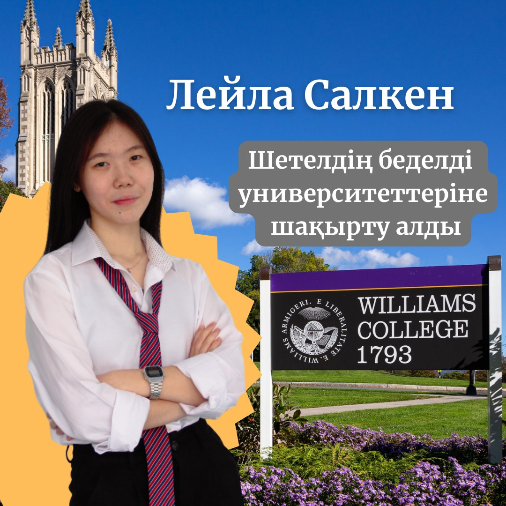

Лейла Салкен получила приглашение в престижные зарубежные университеты

Лейла Салкен ученица 12 класса школы NIS международного бакалавриата получила приглашение в престижные зарубежные университеты
Лейла получила приглашение в два престижных американских университета – Williams College и Indiana University Bloomington. Также наша ученица стала обладательницей специального гранта. В дальнейшем Лейла получит образование в области экономики.
– Я очень благодарна своему учителю математики – мистеру Адилету, и школьному профориентатору – мисс Альфие, за оказанную поддержку и вдохновение обучаться именно в этом направлении. Я счастлива учиться в Уильямсе, так как это №1 университет либеральных исскуств в математике, и их система обучения уникальна,– отметила Лейла.
По словам Лейлы, в ближайшее время она будет готовиться к экзаменам и заниматься любимым делом.